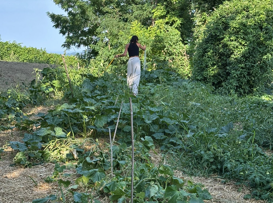

🌱 Primavera – Estate – AutunnoSpring – Summer – AutumnFrühling – Sommer – HerbstPrintemps – Été – Automne
🌱 L'Orto Biologico
🌱 The Organic Garden
🌱 Der Bio-Garten
🌱 Le Jardin Biologique
Impara i segreti della coltivazione biologica, dalla preparazione del terreno alla raccolta di pomodori, zucchine e lattuga. Torni a casa con le verdure che hai raccolto tu stesso.
Learn the secrets of organic farming, from soil preparation to harvesting tomatoes, zucchini and lettuce. Go home with the vegetables you picked yourself.
Lernen Sie die Geheimnisse des Bio-Anbaus — von der Bodenvorbereitung bis zur Ernte von Tomaten, Zucchini und Salat. Gehen Sie mit dem selbst gepflückten Gemüse nach Hause.
Apprenez les secrets de l'agriculture biologique, de la préparation du sol à la récolte des tomates, courgettes et laitue. Rentrez avec les légumes que vous avez cueillis vous-même.